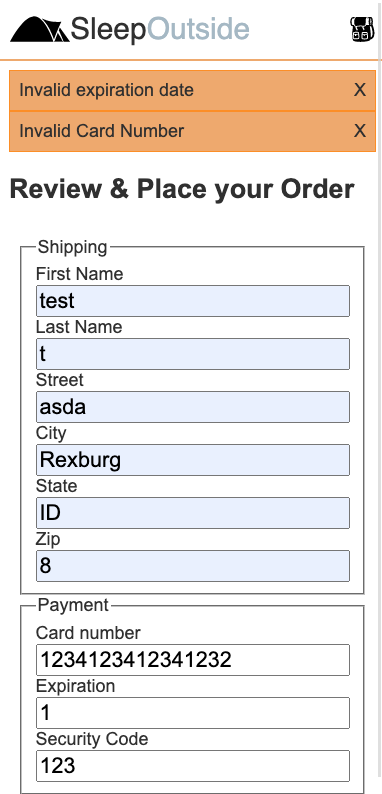

S04 Atividade Individual: Verificação de Erros e Validação
Visão Geral
Na última atividade, o checkout estava funcionando em um nível mínimo. Se o usuário fizer tudo exatamente da maneira que você deseja, o pedido será bem-sucedido. Você não pode confiar que os usuários farão a coisa certa todas as vezes. Você precisa garantir que o usuário esteja fazendo a coisa certa. Faça isso adicionando verificação de erros e validação.
Instruções da Atividade
Conclua a seguinte Tarefa individualmente. Cada estudante escreverá o código para sua própria cópia.
Iniciar a tarefa
- Visite a cópia do quadro do Trello da equipe para o projeto.
- Adicione-se ao
Individual Activity W04: Error Checking and Validationcartão. - Se ninguém mais tiver feito isso ainda, mova-o para
'Doing'. - Leia os detalhes do cartão.
- Certifique-se de fazer pull de quaisquer alterações do GitHub antes de prosseguir.
- Crie uma nova branch chamada
yourinitials--individual4.
Descobrindo o que deu errado
Atualmente, se o pedido falhar, uma mensagem de erro é enviada dizendo "Bad Request". Acontece que o servidor está, na verdade, enviando de volta muito mais informações do que isso, mas elas estão sendo descartadas devido ao processamento de resposta atual.
- Abra o
ExternalServices.mjsmódulo e dê uma olhada naconvertToJsonfunção. Ela deve ser parecida com isto:async function convertToJson(res) { if (res.ok) { return res.json(); } else { throw new Error('Bad Response'); } }É necessária uma mensagem de erro detalhada do corpo da resposta.- Na linha 1, verifique a resposta para ver se ela está 'ok' (res.ok). 'Ok' é qualquer status 200 ou a maioria dos 300s.
- Na linha 2, retorne a resposta como JSON.
- Na linha 4, lance um erro se a resposta não estiver ok. Se o status na resposta for 40x ou 50x, então NÃO está ok. O servidor envia de volta uma resposta 400 se algo der errado. Depois, ele coloca os detalhes no corpo da resposta.
- Refatore esta função convertendo o corpo da resposta para JSON antes de verificar se está ok.
- Então, se não estiver ok, envie o corpo da resposta na
throwinstrução.throw new Error()é uma boa maneira de avisar a aplicação que algo deu errado. Neste caso, há um problema com isso porqueError()aceita uma string simples como argumento. Você não pode enviar um objeto. Existem algumas maneiras de contornar isso.- Você poderia
stringifyo objeto. - Você poderia enviar um objeto personalizado de volta com o
throwem vez do padrãonew Error().
Neste caso, o segundo método faz mais sentido.
- Você poderia
- Use as propriedades
Error()do objetonameemessagepara enviar o corpo da resposta de volta para a função chamadora. Altere a linha que se parece comthrow new Error('Bad Response');para algo mais parecido com isto:
A variávelthrow { name: 'servicesError', message: jsonResponse };jsonResponsedeve ser o corpo da resposta do servidor convertida para JSON.
Capturando o erro
Os erros só são úteis se forem capturados e manipulados. Apenas lançar um erro sem um bloco catch correspondente é ineficaz.
Ao manipular o erro, existem duas opções para a localização do bloco catch. Você pode colocá-lo dentro do método checkout do módulo ExternalServices, ou dentro do método checkout do módulo CheckoutProcess. Considere as vantagens e desvantagens de cada abordagem.
Onde colocar a manipulação de erros
Manipular um erro perto de onde ele aconteceu geralmente é uma boa coisa, mas o usuário precisa saber o que fez de errado neste caso. O formulário e a manipulação do formulário estão no CheckoutProcess módulo e, portanto, neste caso, faz sentido capturar o erro lá.
- Adicione um
try { } catch(err) { }bloco noCheckoutProcess->checkout.- A parte do código que pode quebrar deve ir dentro de
try { // code here } - E o que você quer que aconteça se o código no try tiver um erro deve ir no
catch(err) { }
- A parte do código que pode quebrar deve ir dentro de
Validação de Formulário
O servidor exige que todos os campos sejam preenchidos. O HTML fornece validação do lado do cliente para informações ausentes usando
o required atributo em elementos de entrada. Isso permite um feedback imediato ao usuário antes do envio
do formulário.
- Adicione o HTML
requiredatributo a todas as entradas do formulário.
Dependendo de como você está escutando o envio do formulário, a validação HTML pode ou não estar funcionando. Se você
anexou um click ouvinte no botão, você precisará disparar a validação manualmente; se você
escutou o submit evento no formulário, a validação deve funcionar automaticamente. Anteriormente,
você determinou que, como estava enviando o formulário via AJAX, não queria que o formulário fizesse o que
normalmente faria se fosse enviado. No ouvinte para o botão do formulário, você adicionou e.preventDefault();. Essa parte do seu código deve ser algo como isto:
document.querySelector('#checkoutSubmit')
.addEventListener('click', (e) => {
e.preventDefault();
myCheckout.checkout();
});Faça o seguinte em sua função manipuladora do ouvinte se a validação do formulário não estiver funcionando:
- Obtenha o formulário do DOM.
- Os formulários têm um método chamado
checkValidityque retornará false se encontrar algo nos dados do formulário que vá contra as regras de validação. Chame-o e armazene o resultado em uma variável. - Você também pode disparar manualmente as mensagens que o navegador
adicionará à página quando algo estiver errado. Isso é feito
com
myForm.reportValidity() - Por fim, se o teste de validade retornar false, você não
deseja continuar.
EnvolvamyCheckout.checkout();em uma instrução if para impedi-lo de continuar.
Clique para ver o exemplo
document.querySelector('#checkoutSubmit').addEventListener('click', (e) => {
e.preventDefault();
const myForm = document.forms[0];
const chk_status = myForm.checkValidity();
myForm.reportValidity();
if(chk_status)
myCheckout.checkout();
});Aproveitando a validação HTML integrada que o navegador pode gerenciar, o total do tratamento de erros é dramaticamente reduzido.
Pensando novamente na leitura anterior (MDN: Validação de formulário do lado do cliente), o que mais você deve adicionar à validação HTML para ajudar os usuários a nos fornecerem uma boa entrada? Planeje discutir isso com sua equipe e adicione as coisas que achar apropriadas.
Lidando com o Happy Path 😁
Atualmente, a aplicação não dá nenhum feedback ao usuário sobre se o pedido foi bem-sucedido ou falhou. Vamos começar respondendo a um pedido bem-sucedido. Você deve fazer o seguinte:
☑️ Dê ao usuário uma mensagem de sucesso.
☑️ Esvazie o carrinho.
☑️ Mais alguma coisa?
Esta não é uma lista muito longa. A principal decisão a ser tomada é como você quer enviar uma mensagem ao usuário? Você pode exibir algo na página atual ou levar o usuário para uma nova página com uma mensagem de sucesso. Deixá-los na página com o formulário não faz muito sentido. Vamos para uma página de sucesso.
- Dentro do
checkoutdiretório crie um novo arquivo:success.html. - Adicione a formatação base incluindo cabeçalho e rodapé e, em seguida, adicione uma mensagem de sucesso para o usuário.
- Em seguida, adicione o código ao seu processo de checkout para levar o usuário a esta página após um checkout bem-sucedido.
- Certifique-se de também esvaziar o conteúdo do carrinho no localStorage.
Objetivos de Extensão
Lidando com o Unhappy Path 😢
A última coisa que você precisa fazer é lidar com os últimos erros que o usuário pode encontrar. Você vai querer permanecer na página do formulário de checkout para que o usuário não perca o que já digitou e para que possa saber o que deu errado e corrigir, se possível. Portanto, uma mensagem pop-up seria apropriada aqui.
'popup' não se refere a um alert. O objetivo é ter algo muito menos intrusivo que
não sobrecarregue a interface do usuário.
Criar mensagens de alerta personalizadas é algo que pode ser útil além de erros, então uma nova função no módulo de utilitários parece apropriada.
- Crie e exporte uma função chamada
alertMessage(message, scroll=true)emutils.mjs. - Crie um alerta que corresponda à captura de tela abaixo.
- Insira seu alerta no topo do elemento
main. - Como o formulário de checkout é mais longo do que cabe na tela de um dispositivo móvel, seu alertMessage deve ter a opção de rolar a página de volta ao topo para garantir que o usuário veja as mensagens de erro.

Clique para ver o exemplo
export function alertMessage(message, scroll = true) {
// create element to hold the alert
const alert = document.createElement('div');
// add a class to style the alert
alert.classList.add('alert');
// set the contents. You should have a message and an X or something the user can click on to remove
// add a listener to the alert to see if they clicked on the X
// if they did then remove the child
alert.addEventListener('click', function(e) {
if( ) { // how can you tell if they clicked on the X or on something else? hint: check out e.target.tagName or e.target.innerText
main.removeChild(this);
}
})
// add the alert to the top of main
const main = document.querySelector('main');
main.prepend(alert);
// make sure they see the alert by scrolling to the top of the window
// you may not always want to do this...so default to scroll=true, but allow it to be passed in and overridden.
if(scroll)
window.scrollTo(0,0);
}Adicionar um alerta aos detalhes do produto
Quando você adiciona um produto ao carrinho, há uma grande chance de que a ação não forneça nenhum feedback ao usuário. Se você já corrigiu isso e o seu fornece feedback, parabéns! Se não, você pode usar este alerta utilitário para enviar rapidamente ao usuário uma mensagem dizendo que o item foi adicionado com sucesso.
Exemplo de Solução
Como parte desta atividade individual, espera-se que você analise uma solução do instrutor, para comparar sua abordagem com ela. Uma das perguntas no Envio do Canvas solicitará que você forneça percepções sobre essa comparação.
NÃO EM HIPÓTESE ALGUMA abra a solução até ter trabalhado nesta atividade por pelo menos uma hora. Ao final da hora, se você ainda estiver com dificuldades em alguns dos requisitos principais, sinta-se à vontade para ver a solução de exemplo e usá-la para ajudá-lo a concluir seu próprio código.
Após trabalhar individualmente na atividade de uma hora, clique aqui para ver a solução de exemplo.
Faça um pull request
Finalize este trabalho do Projeto individual concluindo seu trabalho individual e, em seguida, coordenando com sua equipe.
- Faça o commit e envie suas alterações.
- Reúna-se com sua equipe e discuta quais alterações (branch) do membro da equipe vocês gostariam de manter.
Sua equipe manterá apenas uma. - Envie uma requisição para a branch que você decidiu manter.
- Revise o pull request, feche-o e mescle a branch de volta para a branch Main.
- Mova a tarefa para a coluna
"Done".
Envio
Retorne ao Canvas para relatar seu trabalho.